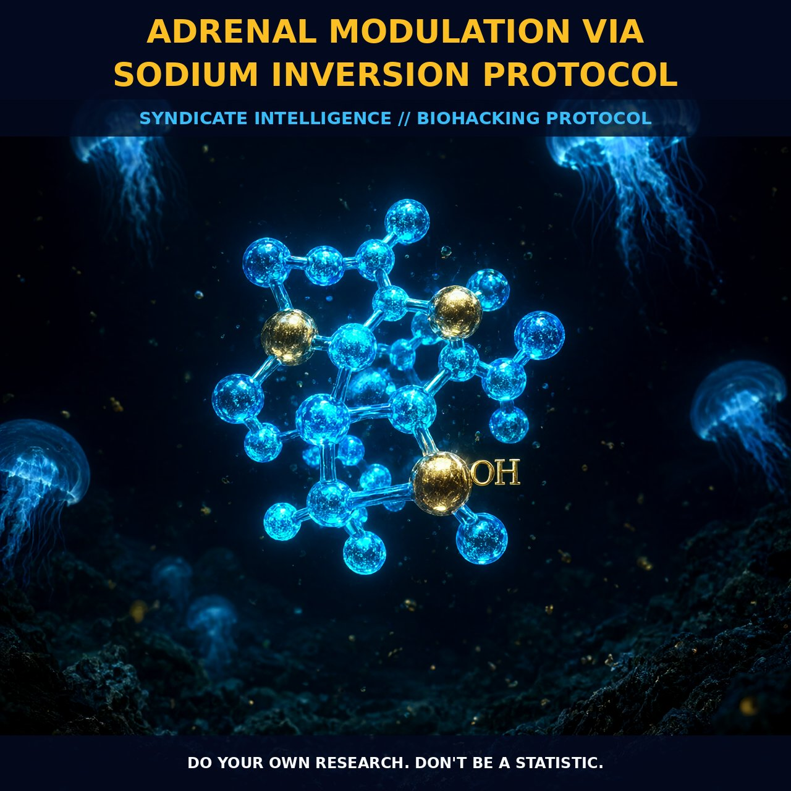

Osmotic Modulation of the Pituitary-Adrenal Axis: The Sodium

1. The Physiology of Sodium Inversion
The pituitary-adrenal axis operates as a dynamic lever, shifting between reactive exhaustion and regulated resilience based on the duration of osmotic stimulation. Research into salt loading reveals that short-term stimulation amplifies the pituitary's response to corticotropin-releasing hormone (CRH). This primes the system for acute stress adaptation, mobilizing catecholamines like epinephrine and norepinephrine efficiently without depleting reserves. In this phase, the body remains in a state of high readiness, ensuring the fight-or-flight machinery fires correctly and recovers swiftly.
However, prolonged exposure to elevated sodium levels induces a structural sodium inversion. After eight days of continuous loading, the pituitary response to CRH blunts, altering diurnal patterns so that the stress response shifts later in the day. Crucially, the adrenal glands do not collapse; instead, they enter an optimized efficiency state where chronic over-secretion is curbed and erratic adrenaline spikes are smoothed. We are effectively training the hypothalamus-pituitary-adrenal (HPA) axis to become less reactive to baseline noise while retaining the capacity for strong signal generation.
2. Biological Leverage and Magnesium Preservation
This osmotic modulation directly interrupts the depletion cycle of magnesium, a critical mineral often stripped from tissues during chronic catecholamine release. When adrenaline and norepinephrine circulate constantly due to long-term stress, they drive magnesium into excretion, leaving the system functionally depleted even if blood levels appear normal. By maintaining sodium balance through unrefined sea salt, we help retain magnesium within the cellular matrix.
Preserved magnesium acts as a natural calcium channel blocker, neutralizing the heart-damaging effects of excessive catecholamines and supporting dozens of metabolic processes disrupted by high arousal. The cardiovascular system benefits significantly: stable sodium-driven osmotic pressure supports proper vascular tone, preventing the arterial contraction and arrhythmia risk associated with high epinephrine and glucocorticoid levels. This mechanism breaks the feedback loop of chronic stress, where low magnesium leads to higher blood pressure, which in turn triggers further adrenaline release.
3. Tactical Implementation Protocol
Timing is the decisive variable in this protocol. Ingesting half a teaspoon of unrefined sea salt with 400ml of water within thirty minutes of waking jump-starts the adrenal glands and replenishes electrolytes lost during sleep. This early osmotic stimulus supports the natural cortisol and adrenaline rise needed for daytime arousal, effectively preventing the mid-day crash common in those with depleted adrenals.
Monitoring should focus on qualitative feedback—energy stability and cardiovascular calm—rather than seeking absolute numerical targets. Begin with lower doses and build slowly, particularly if you have a history of low blood pressure or long-standing magnesium deficiency. Combining osmotic salt loads with magnesium supplementation ensures the mineral balance supports hormonal shifts rather than competing with them. The goal is refinement, not suppression: allowing for sustained activation that supports wakefulness and appetite regulation without the jittery edge of chronic catecholamine excess.
4. Prostar Life Hack
The 30-Minute Salt Load: Within 30 minutes of waking, consume 1/2 tsp unrefined pink Himalayan or sea salt in 16oz (400ml) of water. This acts as a 'system reset' for your HPA axis, stabilizing cortisol rhythms and preserving magnesium reserves to prevent the mid-day energy crash before it starts.
Prostar Life Hack
The 30-Minute Salt Load: Within 30 minutes of waking, consume 1/2 tsp unrefined pink Himalayan or sea salt in 16oz (400ml) of water. This acts as a 'system reset' for your HPA axis, stabilizing cortisol rhythms and preserving magnesium reserves to prevent the mid-day energy crash before it starts.
[ AUTHOR: LEAD TECHNICAL RESEARCHER ]